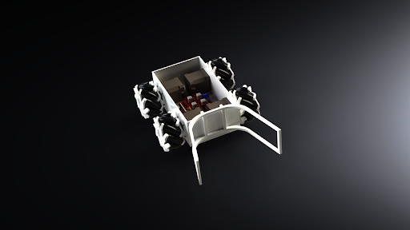
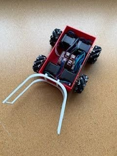
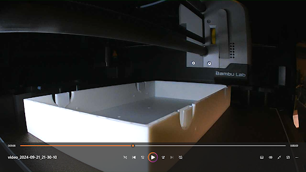
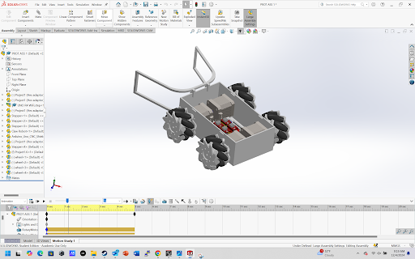
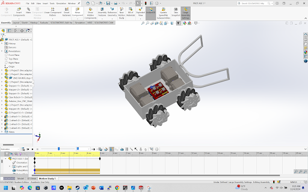
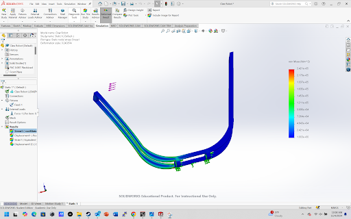
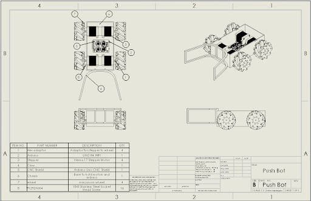
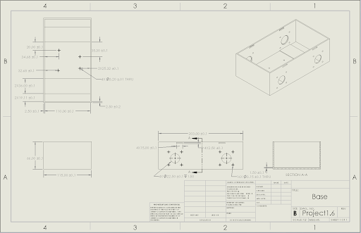
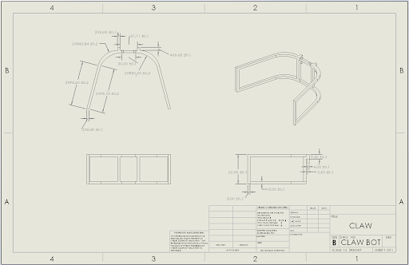

← Back to Portfolio
Robotics Engineering Project
Mecanum Wheel Robot
Omnidirectional robotics platform designed and developed to demonstrate
advanced motion control using mecanum wheel kinematics, enabling full
360° movement without changing orientation. The system integrates embedded
motor control, mechanical design, and real-time movement logic.
Mobility System
Mecanum Drive (Omnidirectional)
Control System
Arduino + C++ Motor Control
Engineering Focus
Kinematics & Control Systems
Project Overview
The Mecanum Wheel Robot was developed as a mobility and controls-focused
engineering project to explore omnidirectional movement using independent
wheel actuation and vector-based motion control.
Unlike traditional differential drive systems, this robot can move in any
direction without changing its orientation, requiring precise coordination
of all four motors through inverse kinematics and PWM motor control logic.
The platform served as a testbed for understanding real-world robotics
motion planning, control signal synchronization, and mechanical alignment
challenges associated with non-standard wheel systems.
Engineering Contributions
-
Designed and assembled mechanical chassis optimized for four mecanum wheel integration.
-
Implemented Arduino-based motor control system for independent wheel actuation.
-
Developed movement logic for forward, sideways (strafe), diagonal, and rotational motion.
-
Tuned motor response to reduce drift and improve directional accuracy.
-
Integrated wiring and power distribution for stable multi-motor operation.
-
Conducted iterative testing to refine movement precision and system responsiveness.
Tools & Technologies
Arduino
C++
PWM Motor Control
DC Motors
Mecanum Kinematics
3D Printing
SolidWorks
Embedded Systems
Control Systems
Engineering Challenges
-
Achieving accurate omnidirectional movement due to wheel slippage and friction variability.
-
Synchronizing motor speeds across all four wheels to prevent drift and rotation errors.
-
Tuning control signals for smooth directional transitions and stable response.
-
Managing mechanical alignment of mecanum rollers for consistent vector motion.
-
Balancing torque distribution across motors under different load conditions.
Design & Development Process
The project followed an iterative prototyping approach beginning with chassis
design and progressing through motor integration, control system development,
and movement calibration.
Initial testing focused on identifying mechanical drift and correcting
inconsistencies in wheel alignment and motor output. Software iterations
refined motion equations to translate directional input into independent
wheel speeds.
Continuous testing cycles improved system responsiveness and reduced error
accumulation during complex movement patterns.
Project Outcomes
-
Achieved functional omnidirectional movement with improved directional accuracy.
-
Reduced drift through motor calibration and control tuning.
-
Improved system stability during diagonal and lateral movement modes.
-
Gained hands-on experience with kinematics-based robotic control systems.
Project Gallery








